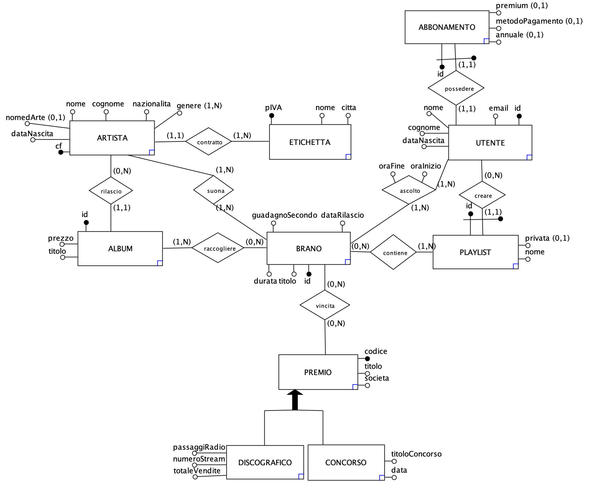

Apollon
Apollon is the project developed for the "Databases" course at the University of Padua during the academic year 2022/23: it consists in the design and implementation of a database for an organization chosen by the student.
The project has been developed with Ane-Marie Margarit in May 2023.
The project consist of the design of a Database (Requirements Analysis, Conceptual Design, Logical Design, Relational Schema) and the study of some queries and indexes. The Database was designed in PostgreSQL and the queries are executed from a command-line C++ project.
Project requirements
To be acceptable, a project must have the following minimum requirements:
- The project’s E-R diagram must contain an adequate number of entities (≥ 5) excluding those involved in a hierarchy (only the parent entity counts);
- At least one significant hierarchy;
- An example of a relationship for each type of cardinality (1:N, 1:1, N:M).
- 5 to 10 significant queries that cover (as a whole) the entire database and answer interesting questions about the database;
- 3 of the above queries must use the “group by” and/or aggregate operators;
- at least 1 query of the above queries must use the “group by” and “having”;
- introduce at least one significant secondary index: assume a large-scale use case and justify the choice of the index(es).
Abstract
Apollon is an online music streaming platform that offers users a vast catalog of music to stream. Founded in 2021, Apollon has quickly established itself as a leading music streaming platform due to its vast music library and innovative features. Apollon offers users access to millions of songs from various genres of music, including pop, rock, rap, blues, jazz, and more. Users can search and play specific songs, create custom playlists (public and/or private), and follow their favorite artists. The platform is available on multiple devices, including mobile (iOS and Android) and desktop, allowing users to access their favorite music wherever they are. It has become a popular choice for music lovers looking for a complete and immersive listening experience.
To download the documentation: APOLLON.pdf 
For the GitHub repository: APOLLON